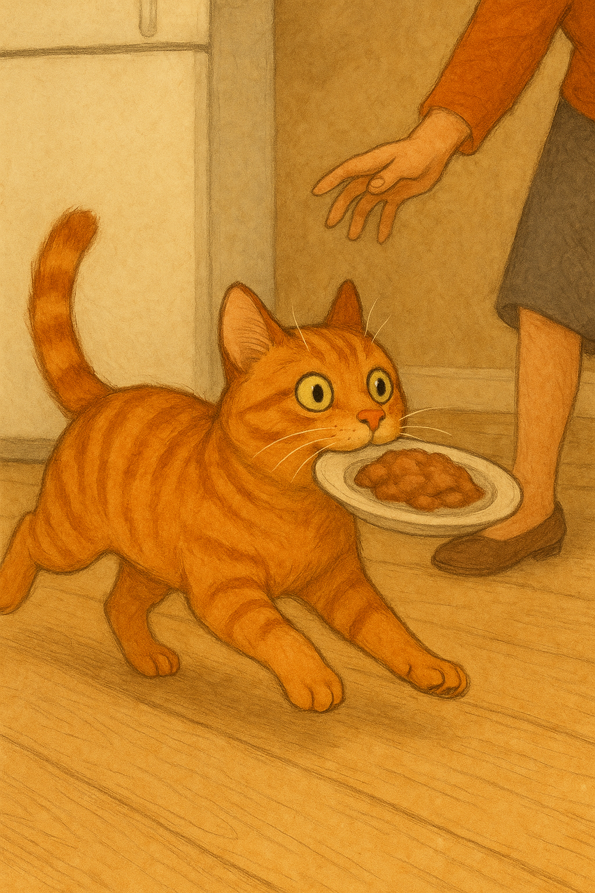

Кот Анатолий был не просто котом. Он был интеллигентом в полосатой шубке, утонченным эстетом и профессиональным экспертом по колбасным изделиям.
Его день начинался с тщательного наблюдения за холодильником и закончился медитативным созерцанием пустой миски — с трагической ноткой в глазах.
Но однажды всё изменилось.
В воскресенье утром Анатолий подслушал (через слегка приоткрытую дверь) разговор своих хозяев:
— Надо бы на дачу съездить… Сардельки возьмём.
— Хорошо, только не забудь про "тех самых", что Толик нюхом чувствует.
Толик вздрогнул. Сардельки?! Те самые, из мясного отдела с ароматом счастья и капелькой чеснока. Он знал — в этот день всё должно было случиться. И он был готов.
Когда хозяева загрузили сумки в машину, Анатолий включил режим шпиона. Он пробрался в багажник, спрятавшись под пледом. Его сердце стучало громко, как микроволновка в режиме "разморозка". И вот — дача.
Всё шло по плану, пока не начался обед. Хозяева ушли в дом, а Толик остался на веранде с одним-единственным холодильным ящиком, в котором — он был уверен — лежали сардельки его мечты.
Он не стал медлить. Открыл коробку... лапой. (На самом деле, она уже была приоткрыта, но звучит круче, когда лапой.)
И вот — перед ним лежали они. Семь сарделек. Толик съел… шесть с половиной. Последнюю он оставил в качестве художественного жеста. На ней он нарисовал лапой сердечко. Хозяева должны были знать — это был не воровской налёт. Это было искусство.
Когда его обнаружили, он уже валялся в гамаке пузом к солнцу, тихонько похрапывая и улыбаясь.
С тех пор его прозвали Толька-Сарделька. Он стал легендой в округе. Даже соседский пёс Борис стал смотреть на него с уважением (и завистью).